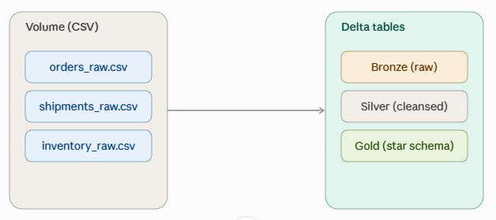
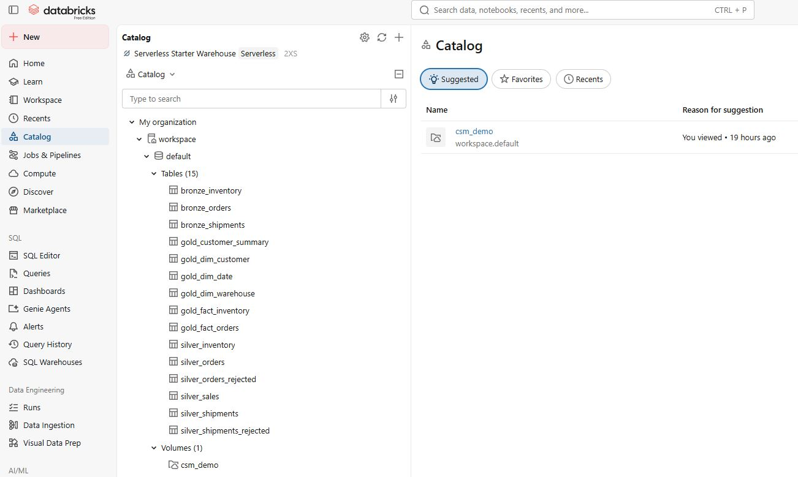
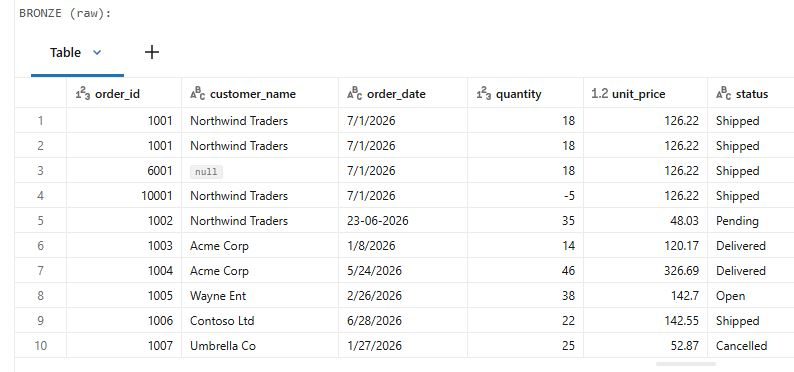
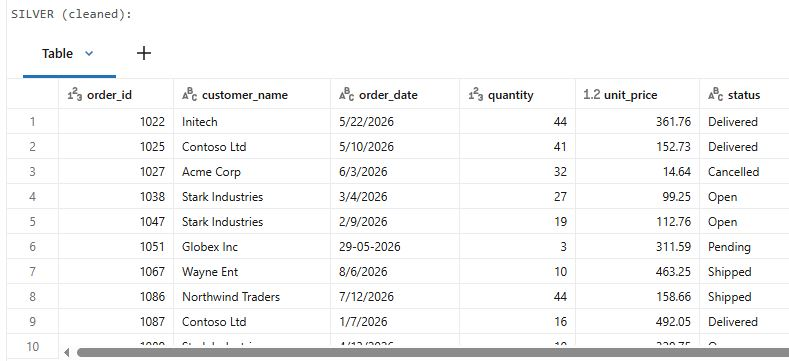
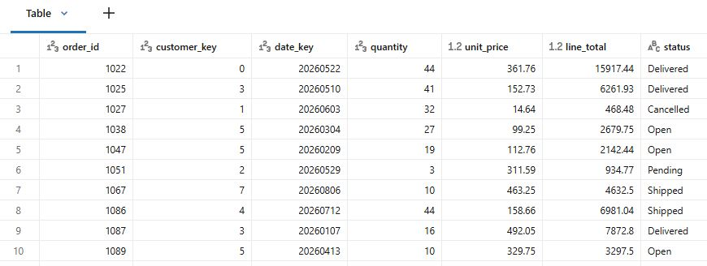
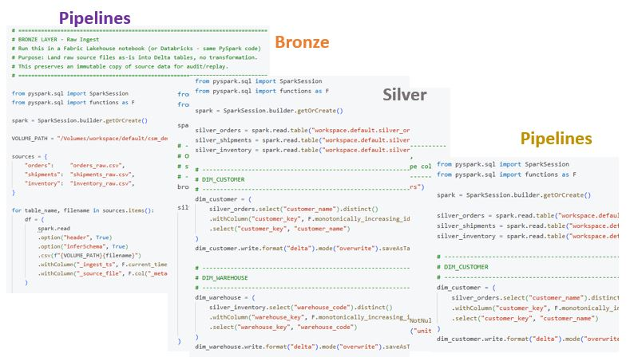
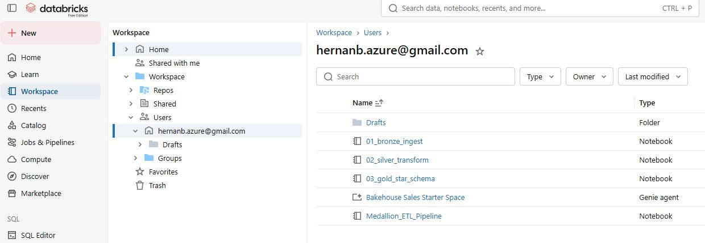

This section showcases an end-to-end data engineering solution built using Databricks and PySpark. The project demonstrates data ingestion, transformation, data quality processing, Delta Tables, Medallion Architecture, data pipelines, Catalogs, and dimensional modeling.
The solution uses inventory, orders, and shipment data to demonstrate the progression from raw source data to cleaned and analytics-ready data.
The project begins with three CSV data sources representing operational business data for inventory, orders, and shipments. The data is ingested into the Databricks environment for processing through the Medallion Architecture.

The Databricks Catalog provides an organized structure for managing and accessing the data assets used throughout the data engineering solution.

The solution follows a Medallion Architecture consisting of Bronze, Silver, and Gold layers. Each layer represents a different stage of data processing and refinement.
The Bronze layer contains the initial ingested data stored in Delta Tables.

The Silver layer contains cleaned and transformed data, prepared for business and analytical processing.

The Gold layer contains analytics-ready data modeled for business consumption, including Fact and Dimension structures.

Data pipelines automate the movement and transformation of data through the Bronze, Silver, and Gold layers. This provides a repeatable process for transforming source data into analytics-ready datasets.

The Databricks Workspace provides the development environment used to organize notebooks, pipelines, data assets, and engineering activities for the solution.

This project demonstrates an end-to-end data engineering workflow from operational source data through ingestion, transformation, data quality processing, and dimensional modeling to produce analytics-ready data.